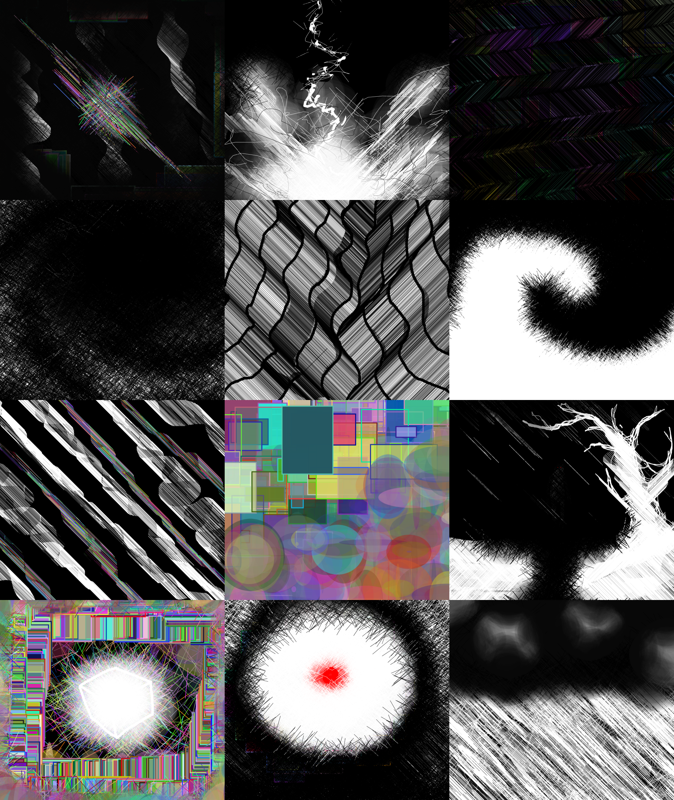

For this exercise I wanted to make a interactive zombie face.
In my sketch I used basic drawing functions including ellipse(), circle(), rect(), triangle(), arc(), and line() to make the face shapes.
andin order to achieve the green undead color along with the creation of more complicated shapes I used fill() and nofill(). Along with these visual commands there were many others used behind the scenes such as,
let(), console.log(), for(), if()/else(), mouseX, mouseY, operator shortcuts, and random(). These helped me to use concepts like nested for and if loops, assigning variables, and the ability to properly mix code together.
Run Final Version Exercise 1
See code for Final Version Exercise 1
Exercise 2 introduced mutliple different concepts and how we could use them. And to demonstrate them, I created a sort of shooting gallery where you could summon a zombie head and shoot at it.
Additionally, the HSB color mode was used for the text to load colors differently
I attempted to use new concepts like the loading of unique fonts and images. I tried to use these by creating instructions using text and using the loadImage(), image() commands with transparency of PNGs . The text was also edited with commands such as textSize(), textFont() and fill() to make it unique. Other concepts like different variable types, concatenation, using booleans to toggle logic and utilizing code from exercise 1 inside it's own function were also introduced here.
Mouse commands such as mousePressed() and mouseIsPressed, were used alongside keyboard events like key, keyIsPressed, and keyPressed, to make the exercise feel more interactive than exercise 1. Additionally, the HSB color mode was used for the text to demonstrate the different color modes.
Run Exercise 2
See code for Exercise 2
For my project 1 I chose to work with teh paint template because I wanted to make a usable painting program.
I didn't have any specific brushes in mind when I started, but I found interesting ones as I continued to work.
The custom brushes that I put in functions are ekStripe(), ekStripeNoise(), ekStripeRainbow(), ekStripeRainbowNoise(), ekCircles(), ekSquares(), and ekOpacity().
The stripes are lines drawn at an agnle and produce an interesting barcode effect. The functions with Noise in them produce a messy star of lines that randomly spawn around your cursor.
The only difference in the rainbow functions is that they have randomized colors when used. ekCircles and Squares constantly spawn a collage of transparent rainbow squares and circles when used.
And finally, the opacity brush constantly spawns black circles wiht varying sizes and transparency. All of these commands are controlled with mouse and key generated events.
Additionally, I also added the ability to fill the canvas with white or black, the ability to toggle between white and black for certain brushes and horizontally flip the stipres spawned.
Something that was succseful was the iteration of coding examples from class to create new brushes. I was able to make new brushes that I felt gave me more creative freedom.
My biggest challenges came from implementing the abilities that modfiy my brushes. Resizing, recoloring, and flipping orientation of brushes was the most challenging for me.

{kind=link}
{kind=link}
{kind=link}
{kind=link}
{kind=link}